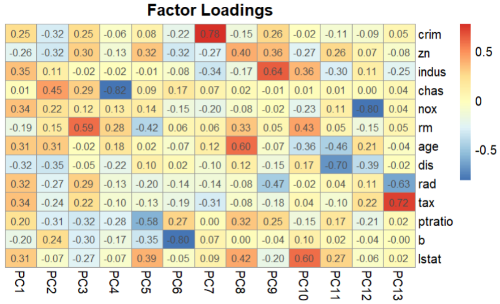

Real Estate / Regression Analysis
2023.12
Boston Housing Price Regression Analysis
보스턴 주택 가격 데이터셋을 활용한 다중회귀분석 프로젝트. PCA를 통한 다중공선성 해결, 랜덤포레스트 회귀, K-평균 군집화를 적용하여 주택 가격 예측 모델을 구축하고 시장 세분화를 수행했습니다.

My Role
PCA로 다중공선성 해결 (9개 주성분으로 95% 분산 설명), 다중회귀/랜덤포레스트 모델 구축 및 K-평균 군집화 수행
Key Results
- 다중회귀 R² 0.7338 / PCA 적용 후 R² 0.7456
- 랜덤포레스트 R² 0.877, MAE 2.29, RMSE 3.30
- K-평균 군집화로 4개 시장 세그먼트 도출